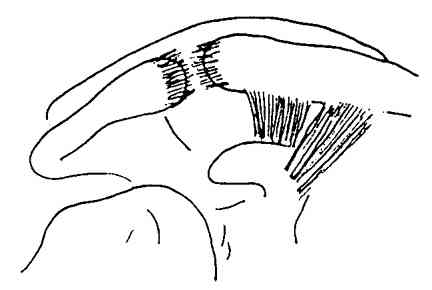
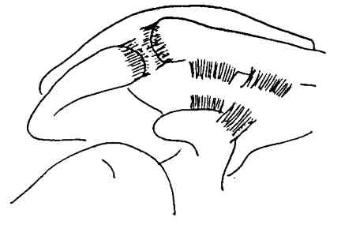
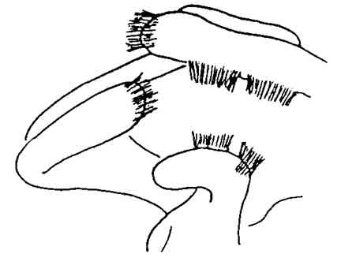
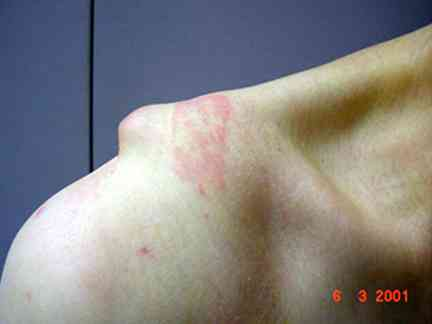
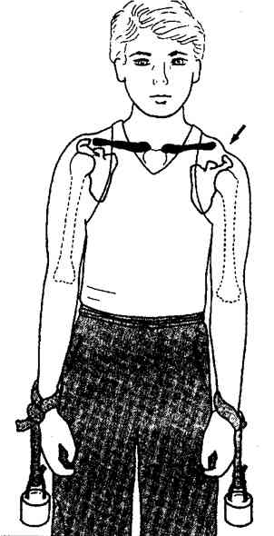
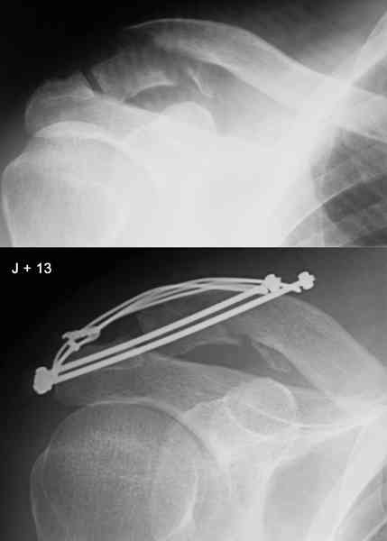
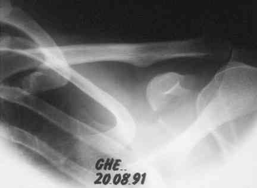

Bienvenue Sur Medical Education
Disjonctions acromio-claviculaires
Spécialité : traumatologie /
Points importants
-
Elles sont très fréquentes, aussi bien en traumatologie du sport (vélo, rugby, sports de combats...) qu'en traumatologie de la route et domestique
Présentation clinique / CIMU
SIGNES FONCTIONNELS
-
Douleur spontanée intense (non corrélée à la gravité)
-
Impotence du membre supérieur avec difficulté de mobilisation du coude au-delà du plan de l'épaule
CONTEXTE
Présentation clinique / CIMU
SIGNES FONCTIONNELS
- Douleur spontanée intense (non corrélée à la gravité)
- Impotence du membre supérieur avec difficulté de mobilisation du coude au-delà du plan de l'épaule
CONTEXTE
Circonstances de survenue
- Choc direct sur le moignon de l'épaule
EXAMEN CLINIQUE
Inspection
- Œdème localisé
Classification
- Les classifications sont nombreuses (3 à 6 stades) : la classification de Julliard est basée sur 3 stades (son caractère pratique et facile à utiliser au quotidien est un atout considérable)
-
Stade I :
-  _793 Disjonction acromio-claviculaire de stade 1
- il correspond à une seule lésion à savoir l'atteinte des ligaments acromio-claviculaires
- il existe une douleur exquise sur l'articulation acromio-claviculaire sans tiroir et sans touche de piano
-
Stade II :
-  _794 Disjonction acromio-claviculaire de stade 2
- il correspond à la présence de 2 lésions : les ligaments acromio-claviculaires et les ligaments coraco-claviculaires
- cliniquement on retrouve, une douleur exquise et un tiroir antéro-postérieur
- l'incongruence articulaire n'est pas permanente mais intermittente
-
Stade III :
-
il correspond à la présence de 3 lésions : rupture des ligaments acromio-claviculaires et coraco-claviculaires et rupture également de la chape delto-trapézienne
-  _795 Disjonction acromio-claviculaire de stade 3
-
l'incongruence articulaire est permanente avec touche de piano, tiroir antéro-postérieur et parfois marche d'escalier
-  _796 Photo Aspect de marche d'escalier de l'acromio-claviculaire
-
il correspond à la présence de 3 lésions : rupture des ligaments acromio-claviculaires et coraco-claviculaires et rupture également de la chape delto-trapézienne
Signes paracliniques
BIOLOGIQUE
-
Bilan préopératoire si stade III de Julliard
IMAGERIE
Indispensables pour préciser le stade lésionnel et rechercher les lésions associées éventuelles
- En cas d'incongruence articulaire évidente, une radiographie de face simple suffit pour visualiser la lésion et le déplacement
- En cas d'absence d'incongruence, il faut demander des clichés dynamiques, comparatifs, de face debout avec poids de 10 kg attaché à chacun des poignets (5 kg pour les femmes) ; ces clichés permettent de faire la différence entre stade I et II (augmentation de l'espace acromio-claviculaire et inter-coraco-claviculaire dans les stades II)
 _797 Radiographies dynamiques avec poids attachés aux poignets
Diagnostic étiologique
Equivalents de disjonction acromio-claviculaire
-
Ce sont les fractures de l'extrémité acromiale de la clavicule passant en dehors des ligaments coraco-claviculaires (ou à travers) avec rupture de ceux-ci ou avulsion osseuse
-  _798 Photo Fracture de Latarjet ostéosynthésée par haubans sur 2 broches
Fractures du pied de la coracoïde
- Il s'agit d'une disjonction acromio-claviculaire sans rupture des ligaments coraco-claviculaires (pas d'augmentation de l'espace inter-coraco-claviculaire)
-
Le piège est de passer à côté et de négliger une telle lésion :
-
l'oeil doit être attiré par l'absence d'élargissement inter-coraco-claviculaire qui contraste avec une disjonction acromio-claviculaire évidente
-  _799 Photo Disjonction acromio-claviculaire
- le traitement à distance du traumatisme est souvent très difficile (pseudarthrose du pied de la coracoïde)
-
l'oeil doit être attiré par l'absence d'élargissement inter-coraco-claviculaire qui contraste avec une disjonction acromio-claviculaire évidente
Traitement
-
Encore controversé, les défenseurs du traitement chirurgical s'opposant aux défenseurs du traitement orthopédique
Stades I et II : traitement fonctionnel
- Strapping inutile (réconfort psychologique)
_953
- - -
Strapping d'une disjonction acromio-claviculaire
Stade III : traitement chirurgical Auteur(s) : Jean-Jacques BANIHACHEMI, Dominique SARAGAGLIA
Devenir / orientation
CRITERES D'ADMISSION
CRITERES DE SORTIE
ORDONNANCE DE SORTIE
RECOMMANDATIONS DE SORTIE
Bibliographie